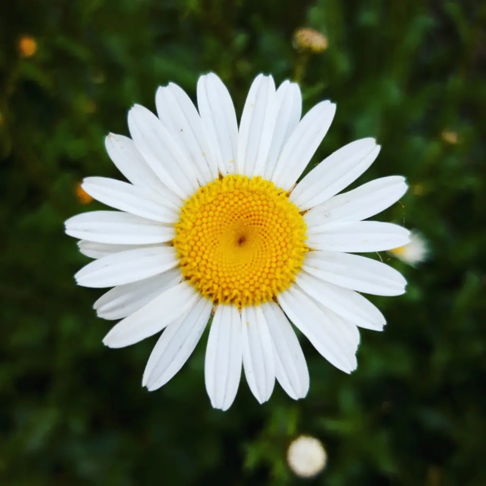

Jardim da Biodiversidade

Nome científico: Leucanthemum maximum
Família botânica: Asteraceae
Origem: Europa
Cor das flores: Branca com centro amarelo
Vaso na Horta Escolar Viva: 🟡 Amarelo
A Margarida Grande é uma planta ornamental muito apreciada por suas flores grandes e elegantes, compostas por pétalas brancas que envolvem um centro amarelo vibrante.
Além de embelezar jardins e canteiros, suas flores atraem diversos polinizadores, tornando-a importante para a conservação da biodiversidade.
As flores da Margarida Grande fornecem néctar e pólen para abelhas, borboletas e outros insetos polinizadores, ajudando na reprodução das plantas e no equilíbrio dos ecossistemas.
A margarida simboliza paz, pureza, esperança e alegria. Em muitos lugares do mundo, ela também representa novos começos e é uma das flores ornamentais mais cultivadas.
Escaneie o QR Code para acessar esta página diretamente pelo celular e conhecer mais sobre a Margarida Grande.